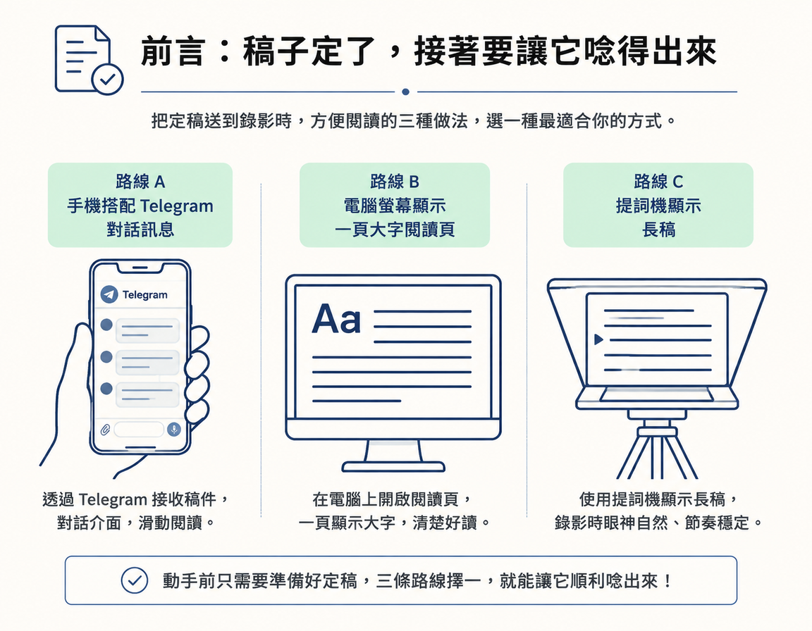

把定稿送到錄影時看得到、唸得到的地方，再用「一次錄完一批」的方式完成錄製，之後交給 agent 剪成個別影片。
這一步是 RUBRIC Scripts 從腳本走向影片的最後一關：你已經挑好 hook、定稿了，現在要把稿子送到錄影時方便閱讀的地方。做完後，你會有一份能照著唸的稿子，以及一段連續錄下來的原始素材；後續再由 agent 協助剪開。
動手前只需要準備好定稿。接下來有三條路：用手機收 Telegram 訊息、在電腦上開一頁閱讀頁，或使用提詞機。選一種最適合你的錄影方式即可。

如果你想拿著手機照稿錄影，可以請 agent 把腳本一支一支傳到 Telegram。把下面的模板交給 agent：
"""Send me my finished scripts on Telegram, so I can read them on my phone.
1. Check if you can already send me Telegram messages. If you're Claude Code, the official way is the Telegram channel plugin: code.claude.com/docs/en/channels. If you can't yet, walk me through the setup one step at a time, and wait for me at each step.
2. Ask me which scripts are ready: the ones I picked a hook for in RUBRIC Scripts, or the ones I name.
3. Send each script as its own message: the title on top, then the script in short paragraphs, nothing else.
4. Tell me how many you sent."""這個指令會依序完成四件事：
完成後，預期會在手機上收到一則則排好的腳本訊息，可以直接照著唸。
如果你想在電腦前看稿錄影，可以請 agent 把選好的腳本整理成一頁閱讀頁：
"""Make me a simple page with my finished scripts from RUBRIC Scripts, so I can read them while I record.
1. Ask me which scripts to include, or take every one I picked a hook for.
2. Put them on one page, one after another, each with its title, the hook I picked, then the script in short lines with big, easy-to-read text.
3. Open it for me, or give me the link."""第一步先選要放入的腳本；你也可以直接採用所有挑過 hook 的稿子。第二步會把它們依序排在同一頁，每支都有標題、你選的 hook，以及大字短行的腳本。最後，agent 會替你打開頁面，或提供連結。
完成後，你會得到一頁適合在電腦上閱讀的腳本。這條路適合坐在桌前、直接看著螢幕唸稿的情境。
提詞機是錄影時用來顯示稿子的工具。講師使用的是自己做的簡易提詞機，有電腦版和手機版；這是選用方式，不使用也沒關係。若想試試看，可以把下面的模板交給 agent：
"""Send my finished scripts from RUBRIC Scripts to my teleprompter, all on one long page, so I can record them in one take.
1. Check my teleprompter is installed and running. If it isn't, tell me and help me set it up.
2. Put the scripts in order, each one starting with its title and a short pause line, so I can tell where one ends and the next starts.
3. Give me the links to open it on my computer and on my phone."""第一步先確認提詞機已安裝並正在執行；如果沒有，agent 會告訴你並協助設定。第二步會依序放入腳本，每支都以標題和簡短的停頓提示開頭，讓你唸完一支後知道在哪裡停一下，再接下一支。第三步會提供電腦和手機的開啟連結。
這個做法的關鍵是把整批稿子放在同一頁，方便一次連續錄完。完成後，你會有一頁長稿，以及能在電腦或手機打開的連結。
不論選哪條路，省時的關鍵都是把腳本集中起來，一次錄完一批。課程示範的做法，是把八支腳本放在同一個提詞機頁面，從第一支一路唸到第八支，錄成一段連續素材；接著再把素材交給 agent 剪開，整理成八支獨立影片。
這樣做可以少重複幾次設定設備、就定位和開始錄影的準備。若每支影片都分開錄，這些準備就得一再重來；批次錄製則只需準備一次。課程舉例，如果把週六安排為內容日，挪出一個小時，用這種方式一次錄 10 到 15 支短影音是可行的。也就是說，一週的影片可以在一個週末上午集中錄完。
做完這一步，你應該會有一份能照著唸的長稿，並錄下一段連續的原始素材。素材剪成一支支影片，則是下一站「自動剪輯」要處理的事：課程會在那裡示範如何讓 agent 把素材切成獨立影片。
把定稿送到方便閱讀的地方：手機可用 Telegram，電腦可用一頁閱讀頁，也可以選用提詞機。接著把整批腳本集中起來，連續錄成一段素材，再交給 agent 剪開。這一步的成果，是一份可照著唸的稿子和一段原始錄影；提詞機不是必備工具。